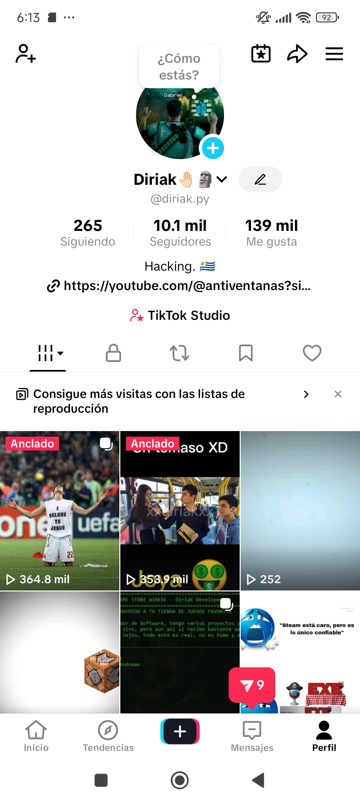
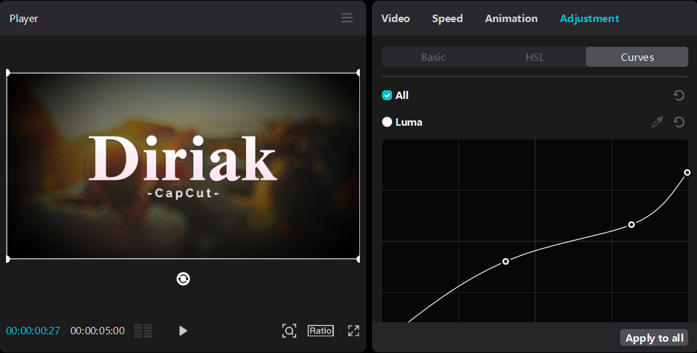
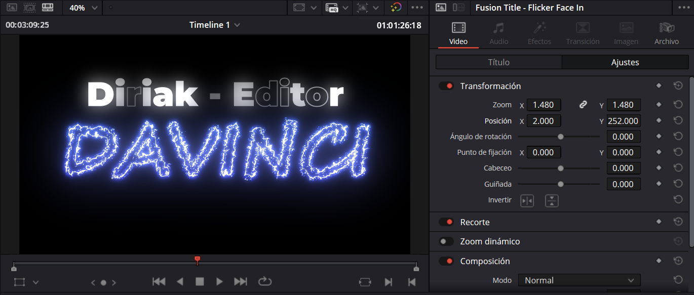

Portfolio de trabajos
Proyectos recientes Videos/clips
Intro Profesional - DaVinci Resolve/CapCut
Intro para Videos con referencia a Uruguay por el Termo, combinando effectos, sonidos y animaciones.
Clip/Video de Edicion Humoristica para Streamer/Youtuber
Combinacion de tecnicas de Edición para incluir Humor y captar la retención del publico.

Influencia y Experiencia como Creador
Experiencia en crecimiento orgánico de cuentas en TikTok

DaVinci Resolve - Potenciales herramientas de Edición
Conocimientos Intermedios-Avanzados sobre DaVinci Resolve.

CapCut - Potenciales herramientas de Edición
Conocimientos Intermedios-Avanzados sobre CapCut.

Fonts Effects - DaVinci Profesional
Edición mas especifica en textos && Fuentes.